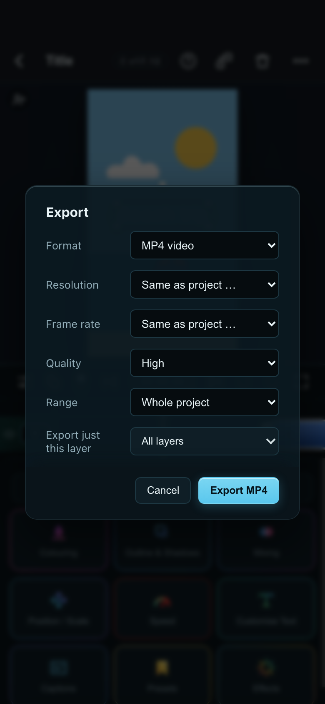
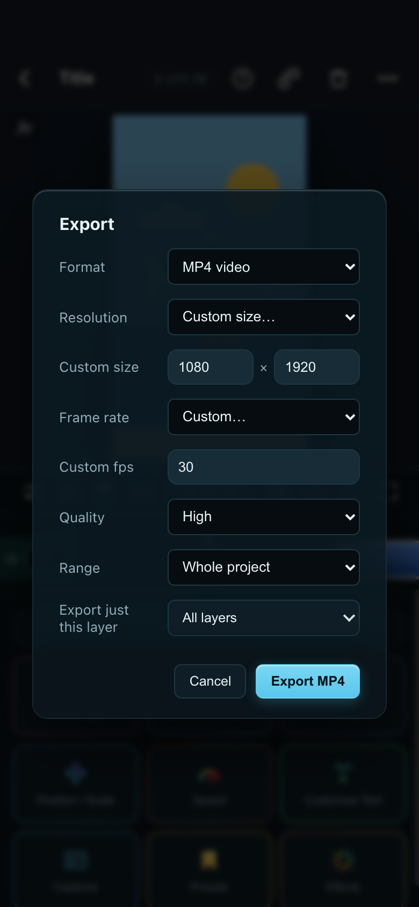
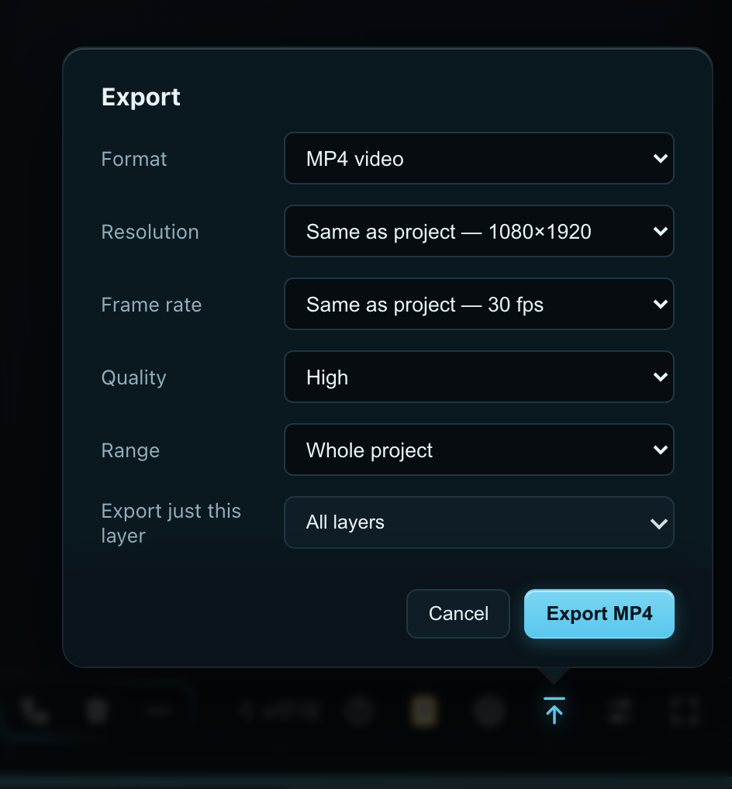
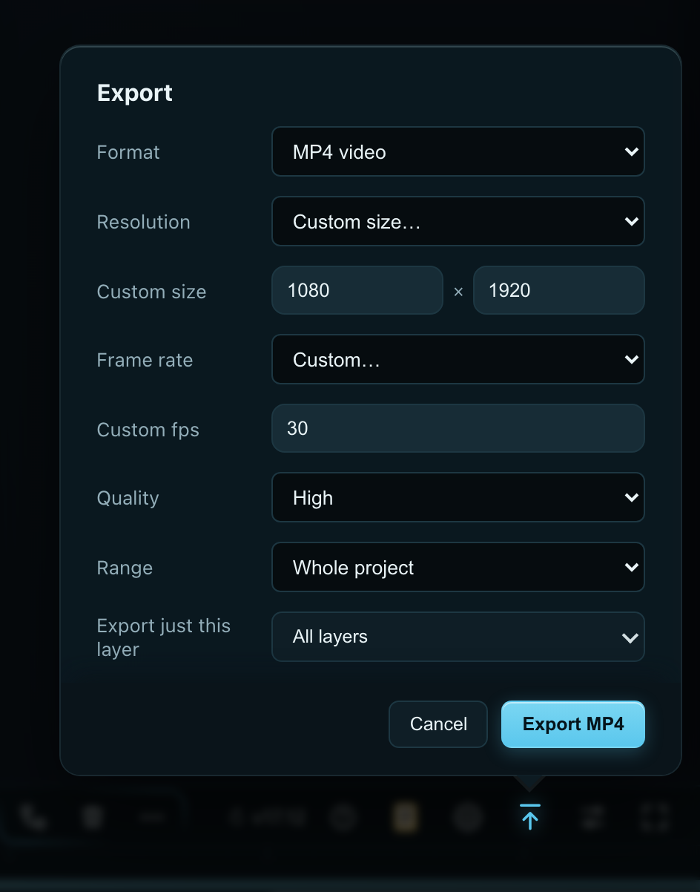

The same project, phone and PC. Every control is a dropdown of equal weight, and two more rows appear when “Custom” is picked.
NowToday
Phone · as it opens

What you see first: six dropdowns of equal weight, then Cancel / Export MP4.
Phone · Custom size + Custom fps picked

What you see first: two more rows (W×H and fps boxes) slot in between.
What makes it daunting
Six questions first, all the same size, before anything says what you will get.
Jargon: fps, ZIP, WAV / M4A, “Resolution”, and “Loop region (if set)”, which the buttons that set it call export marks.
No length, no file size, no picture until the render has finished.
“Export just this layer” sits among the everyday rows, so a one-layer export is easy to miss.
PC 1280×800 · as it opens

What you see first: the same six dropdowns, popping out of Export.
PC · Custom size + Custom fps picked

What you see first: eight rows.
tools/design/985 · throwaway prototypes (985-proto.js) drawn inside the real app’s export card with its own colours and controls; no app code changed. Where every one of today’s settings lives in A, B and C: mapping.md.